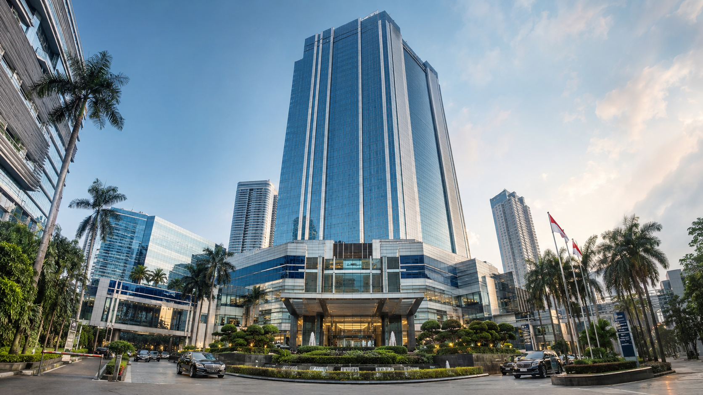

Deskripsi Perusahaan
PT TRANS FANY GARUDA CORPORATION merupakan perusahaan korporasi terintegrasi yang berada di bawah naungan PT HUMAIRA KARINA CENDANA SEAN.
Perusahaan menjalankan berbagai sektor strategis yang saling terhubung untuk menghadirkan solusi bisnis yang efisien, inovatif, profesional, dan berkelanjutan.
Lini bisnis perusahaan meliputi konstruksi, transportasi, logistik, pengembangan properti, serta jaringan ritel modern Fanmart.
Melalui inovasi, profesionalisme, integritas, serta standar kualitas yang tinggi, PT TRANS FANY GARUDA CORPORATION berkomitmen memberikan manfaat bagi masyarakat, pelanggan, mitra bisnis, dan pembangunan Indonesia.
"Membangun Masa Depan Indonesia."